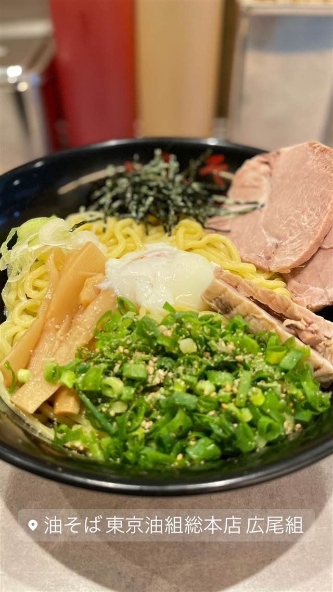

東京油組総本店 広尾組
老舗製麺所と共同開発した中太手もみ麺の油そば
油そば 東京油組総本店 広尾組
「東京油組総本店」は創業60年超の老舗製麺所が2008年に赤坂見附で始めた油そば専門店で、広尾組はその支店の一つ。老舗製麺所と共同開発した中太の手もみ麺に、酢とラー油を回しかけて食べるのが特徴。
TRIVIA
豆知識
- 老舗の製麺会社が母体となって生まれた油そば専門チェーンで、麺のおいしさを伝えるためスープをなくした
- 10年ほどで店舗数が8倍に増えた国内最大級の油そばチェーン
REVIEWS
世間の評判
88.2ラーメンDB3.09食べログ
自分好みに仕上げる調整型油そば
- 酢やラー油、玉ねぎなど卓上調味料で自分好みに味を調整して楽しむ油そばと紹介されている
- 量が多めでも780円前後の均一価格でコスパが良いという声がある
- デフォルトの味だけでは物足りずラー油などを多めにかけ直す人もいる
- こってりしているので途中で飽きてしまうこともあるという声がある
ラーメンデータベース 口コミ19件・最新 2025-08
| 創業 | 2008年10月創業（赤坂見附に1号店） |
|---|---|
| 系譜 | 創業60年超の老舗製麺所（サッポロ実業グループ）が2008年に油そば業態として展開開始。広尾組は多店舗展開の一つ。 |
| 看板 | オリジナル中太手もみ麺の油そば |
| こだわり | 老舗製麺所と共同開発した中太の手もみ麺を使用し、濃厚醤油ダレに酢とラー油を回しかけて食べるスタイル。 |
| どこから | 都心 |
| 営業時間 | 月〜土 11:00-04:00 日 11:00-21:00 |
| 予算 | 昼 ～¥999 夜 ～¥999 |
| 定休日 | 無休 |
| 場所 | 広尾駅 東京都渋谷区広尾（日比谷線広尾駅徒歩3分） |
食べたもの：油そば